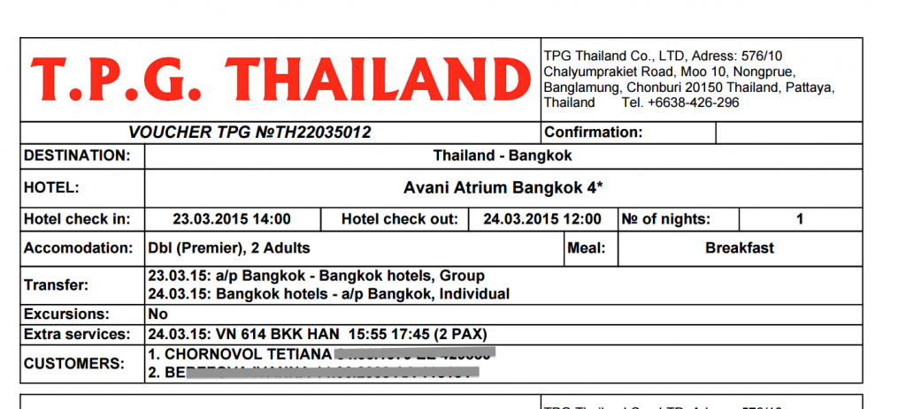
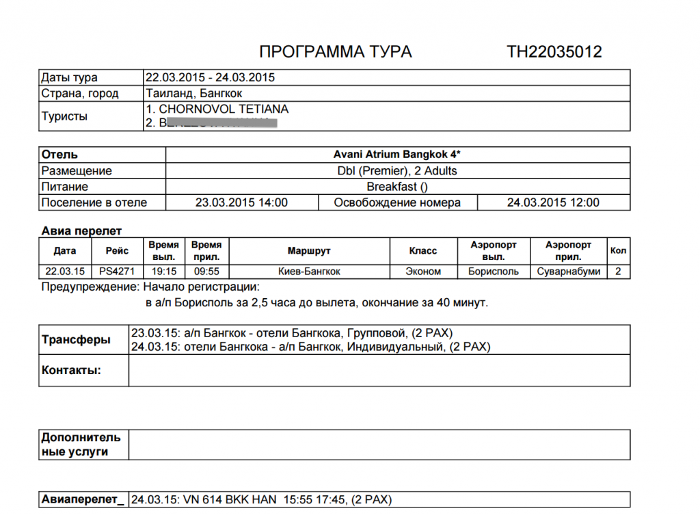
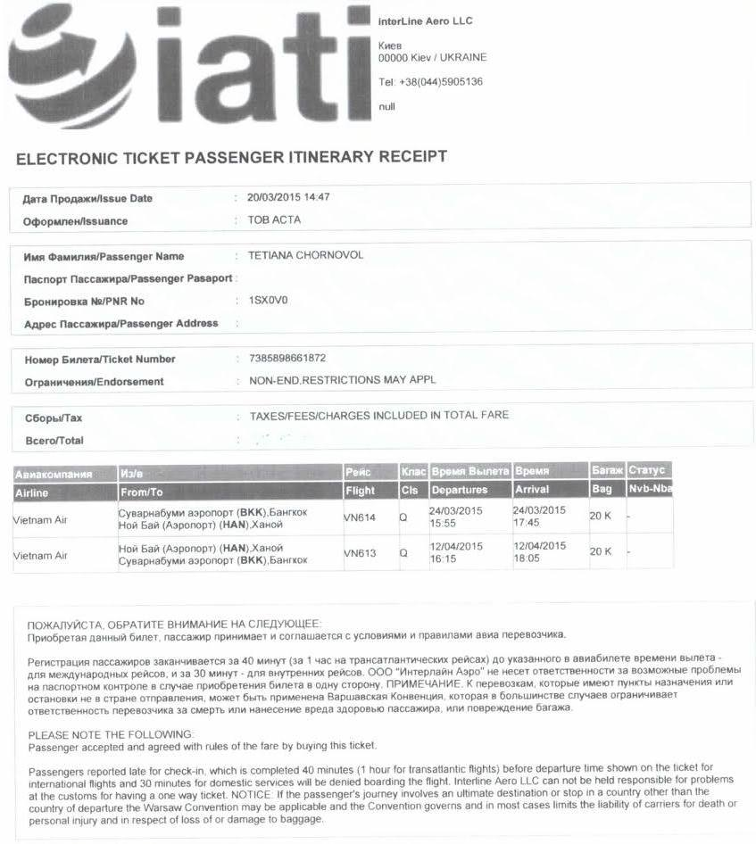

А. Шарий: Татьяне Черновол осточертела политика
Бывает, что политика откровенно надоедает. Осточертела она и народному депутату от «Народного Фронта» Татьяне Черновол.
По имеющейся у меня информации, Татьяна покинула грешную украинскую землю и отправилась на отдых в более экзотические страны.



Ничего плохого в отдыхе нет. К тому же, ничего особо важного сейчас в Украине не происходит, мелочи какие-то, в основном. Однако несколько удивляет, что человек, задекларировавший в свое время годовую сумму дохода, равную цене не очень породистого щенка, отправляется почти на месяц (во всяком случае, 12 апреля она вылетает из аэропорта Ной Бай) в путешествие стоимостью более 50 тысяч гривен.
И изюминкой на этот торт – будучи на должности главы «Антикоррупционного бюро», Татьяна заявляла о своей готовности бороться с этой самой коррупцией. Коррупция – это когда у госчиновника появляются доходы, происхождение которых весьма туманно. Мне, по крайней мере, так кажется…
Анатолий Шарий